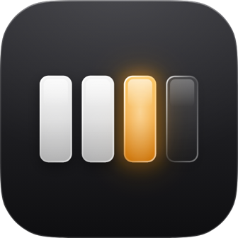

Xcode force-quit. 3.4 GB freed.Memory 91% → 70%
Try it: presstap an app
Live system numbers, screen capture, dictation, transcripts, window snapping and more. Free, and open for anyone to build on.
Apple silicon · macOS 26 or later
Segments
Seven segments, built in. Windows and Keys start off; switch them on in Settings.
01Numbers
Memory, CPU, temperature, swap and battery, one hover away.
Xcode force-quit. 3.4 GB freed.Memory 91% → 70%
Try it: presstap an app
Amber, then red, as macOS reports memory pressure.
Amber at 70%, red at 90%.
Amber at 80 °C, red at 95 °C.
Takes memory’s colour. The warning line does not watch it.
Amber at 20%, red at 10%, while unplugged.
02Capture
Then make a recording smaller, for sending.
A picture of any part of the screen, on your Desktop and clipboard.
The words in anything, even a picture, copied with their layout.
Any part of the screen as a video, with your voice and the Mac’s sound.
One press on the recording’s card: a smaller copy, saved next to it.
03Dictation
Apple’s speech recognition, running on your Mac. Nothing is sent.
Press DICTATE in the panel, or caps lockD once the hyper key is on.
04Windows
Two fingers on its title bar, then swipe toward where it should go.
Needs a trackpadOff until you switch it onNeeds Accessibility
Point at a gesture
to try itTap a gesture
to try it
05Keys
Notch makes it a hyper key: a modifier no app uses.
Off until you switch it on. Needs Accessibility.
Held with another key, Caps Lock counts as Control, Option, Shift and Command together.
06Mirror
Your camera in the notch, flipped like a mirror.
Press MIRRORTap MIRROR
07Transcribe
A video, a sound file or a link, written down on your Mac.
Interview.mov, a video of two people talking, is dragged from the Desktop onto the notch, which widens: Drop to Transcribe. A strip beside the notch shows Transcribing and how far it has got. Then a card: Transcribed, saved to Documents / Scribe, with Copy, Open and Show. Open shows the text in TextEdit, each speaker named: Speaker 1, Speaker 2.
Needs Scribe, a free app that does the work. Without it, TRANSCRIBE hides.
A link? Scribe fetches its sound, as a browser would; the words are still worked out on your Mac.
The first time, Scribe fetches its speech models: about 1 GB.
Build a segment
Transcribe was an open slot here. Now it is a key.
The panel as it is today. Its function bar holds SHOT, TEXT, REC, DICTATE, TRANSCRIBE, MIRROR and FREE, then one open cell for a new segment, then SET.
Open source
In the code a segment is a part: a gauge, a tool or a setting.
Open an issue with your idea
The issue says what the segment does, which kind it is, what you would see or hear, and any permission it needs. Then the maintainer says yes or no.
Add a folder under Sources/, one subject per file
The Sources folder, by feature: Capture, Dictation, Keys, Panel for the numbers and the mirror, Recording, Transcribe and Windows. App, Settings, Shared and Style are shared by all. A new segment is a new folder beside them, such as YourSegment with YourSegment.swift. A tool is also wired in by hand: its key in Panel, in Readouts.swift, and its picture in Style, in Glyphs.swift.
./build.sh, try it, send a pull request
./build.sh makes Notch.app, in about 45 s on an M1 Pro./test.sh runs 109 logic testsscripts/rules.sh checks the rules: no network code, no library
Seven segments, in your notch.
The first time, macOS says Apple could not verify it: click Done, then Open Anyway in System Settings › Privacy & Security.
macOS asks at first use.